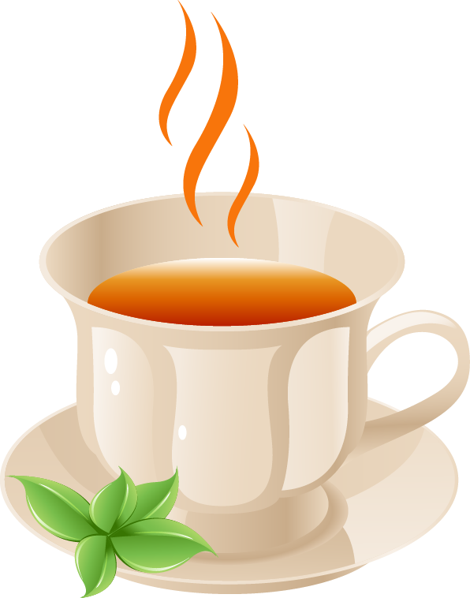

Muitas vezes consumidos como bebidas para acompanhar refeições, os chás possuem diversas propriedades medicinais e que podem ajudar no tratamento de alguns sintomas que não exigem atenção médica imediata, como desconfortos estomacais, inflamações ou graus leves de ansiedade, sendo, então, muito úteis quando consumidos com uma frequência adequada para fins profiláticos, curativos ou paliativos
